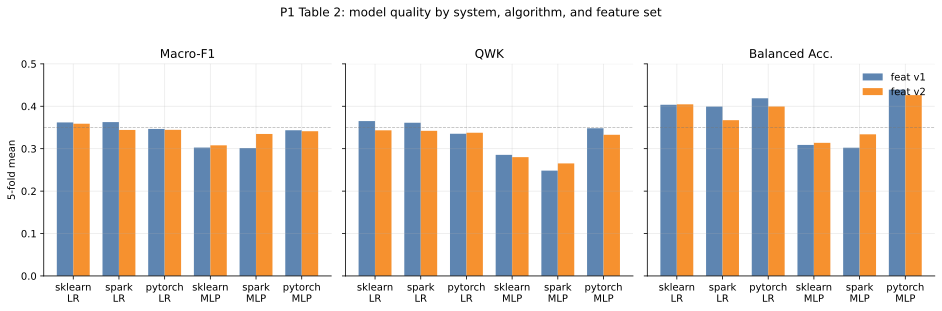
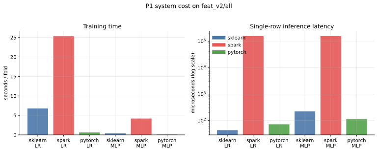
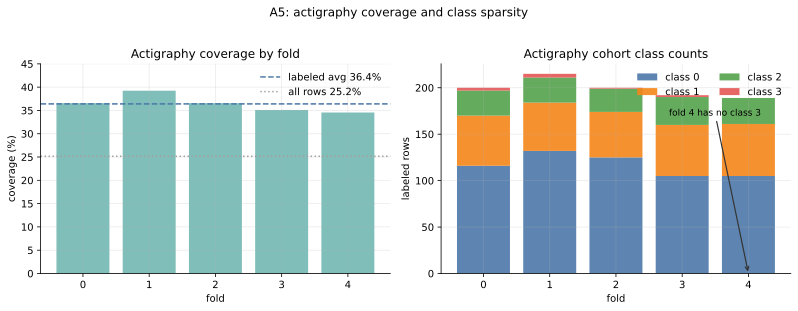
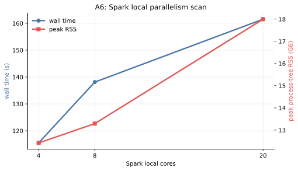
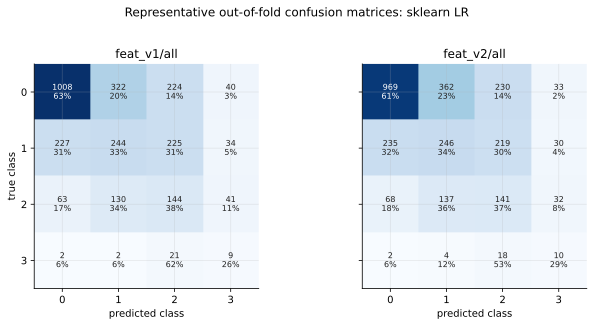
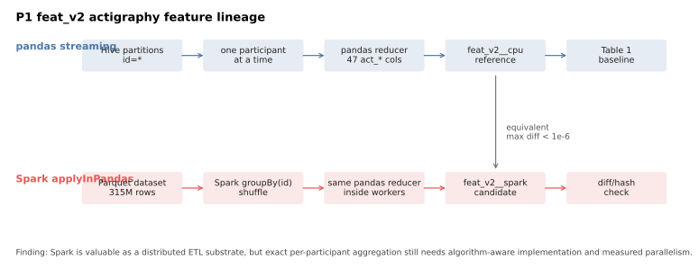

Table 2:模型质量对比

v2 没有稳定压过 v1;Spark LR 与 sklearn LR 指标接近,但系统成本不同。

v2 没有稳定压过 v1;Spark LR 与 sklearn LR 指标接近,但系统成本不同。

Spark 单行推理是完整 job 调度,因此在小表格在线推理阶段非常不划算。

有标签样本 actigraphy 覆盖率只有 36.4%;fold 4 的 actigraphy 子集没有 class 3。

`local[4]` 最快;`local[20]` 更慢且 RSS 更高,说明瓶颈不只是 CPU core 数。

类别 3 样本极少,容易被预测为 class 2;这限制了宏平均指标的稳定提升。

pandas reference 与 Spark candidate 复用同一 reducer,用 diff/hash 闭环保证等价。